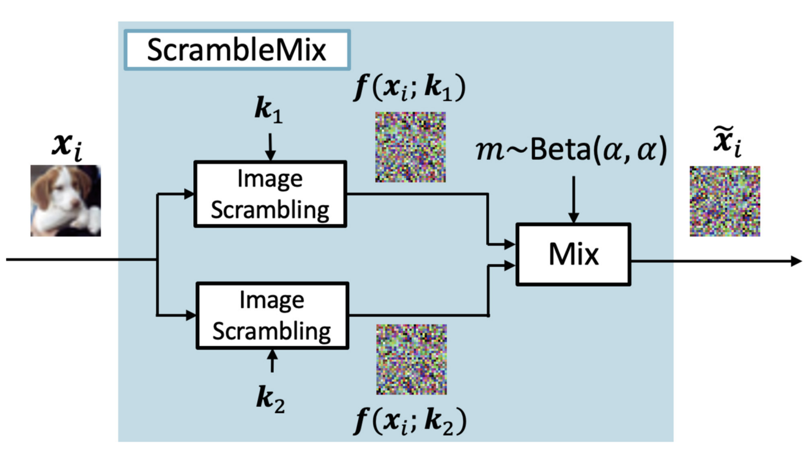
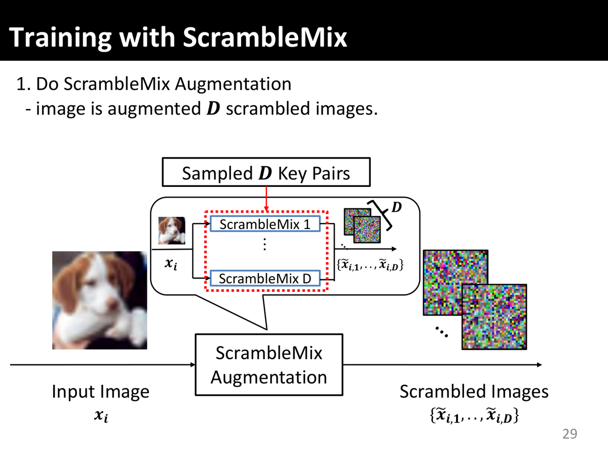
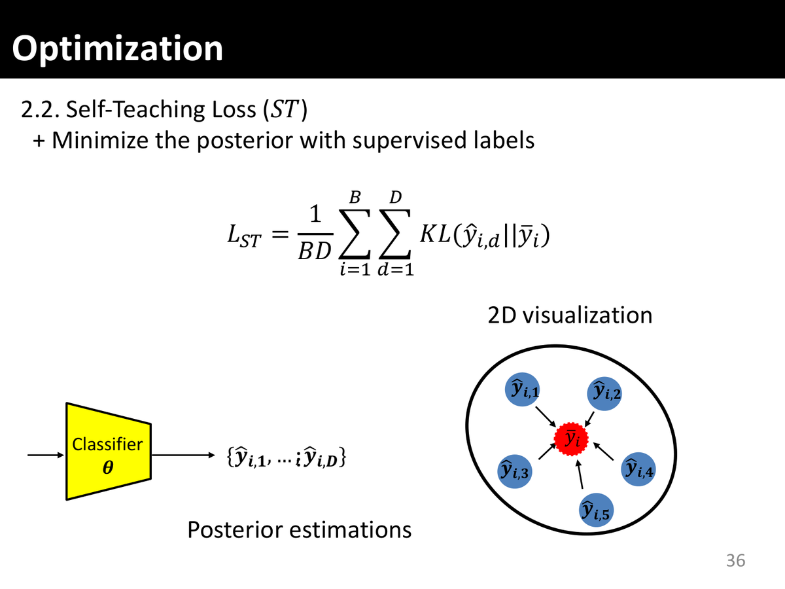
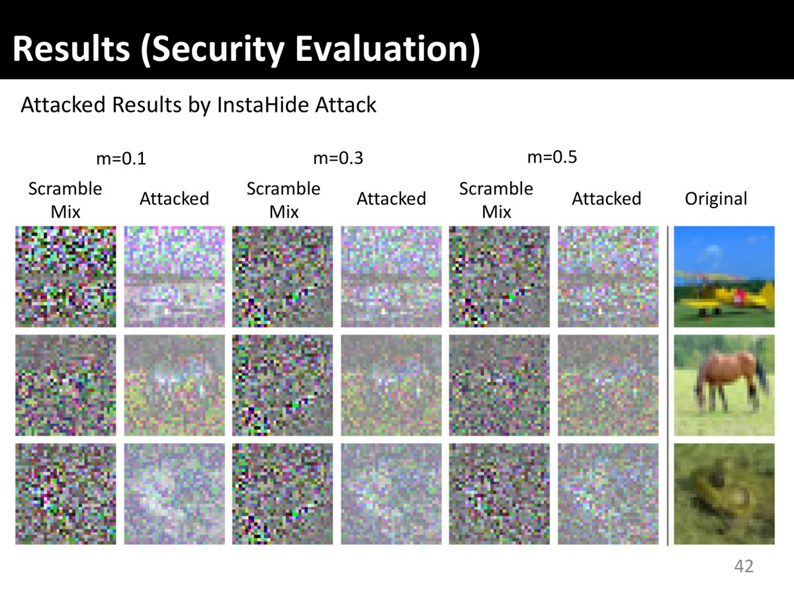

ScrambleMix: A Privacy-Preserving Image Processing for Edge-Cloud Machine Learning
Image and Video Technology — 11th Pacific-Rim Symposium, PSIVT 2023 (Auckland, New Zealand), LNCS 14403, pp. 326–340, Springer, 2024 · doi:10.1007/978-981-97-0376-0_25

Abstract
This paper proposes ScrambleMix, a novel privacy-preserving image processing for edge-cloud machine learning. ScrambleMix combines image scrambling and AugMix to improve visual information hiding. Specifically, to make two scrambled images from a single input image, each copy of the input image is scrambled using a different key every time. Then, the scrambled images are mixed with a randomly sampled mixing ratio. A self-teaching loss is introduced to improve the classification performance of ScrambleMix. In this study, we first evaluate the visual information hiding quantitatively using Learned Perceptual Image Patch Similarity (LPIPS). Then, the experiments with different settings demonstrate the proposed ScrambleMix outperforms the existing approaches for edge-cloud machine learning in terms of both classification accuracy and visual information hiding.
How it is trained and used
- ScrambleMix augmentation. Every training image becomes D scrambled images, each built from its own sampled key pair.
- Self-teaching loss. Different keys should not change the prediction for the same image, so each posterior ŷi,d is pulled towards the average posterior ȳi = StopGrad((1/D) Σd ŷi,d): L = LCE + λ LST, LST = (1/BD) Σi Σd KL(ŷi,d ‖ ȳi).
- Test-time augmentation. At inference the posteriors of T scrambles with keys from the training key set are averaged.


Main results
Classification accuracy (%) without test-time augmentation (T = 1), for two classifiers. ScrambleMix is the best privacy-preserving input on every dataset.
| Classifier | Method | CIFAR-10 | CIFAR-100 | SVHN |
|---|---|---|---|---|
| WideResNet | DataMix | 66.89 | 38.31 | 19.60 |
| InstaHide | 53.58 | 39.06 | 52.47 | |
| Learnable encryption (LE) | 91.34 | 70.62 | 96.50 | |
| Random pixel-wise encryption (PE) | 92.23 | 70.82 | 96.83 | |
| ScrambleMix (proposed) | 93.08 | 71.71 | 96.96 | |
| ShakeDrop | DataMix | 80.10 | 50.97 | 93.42 |
| InstaHide | 52.93 | 39.95 | 52.87 | |
| Learnable encryption (LE) | 94.02 | 77.59 | 97.26 | |
| Random pixel-wise encryption (PE) | 93.51 | 77.10 | 97.26 | |
| ScrambleMix (proposed) | 95.02 | 79.39 | 97.47 |
Values from the PSIVT 2023 presentation slides (slide 39). The slides label the WideResNet as 40×10; the released code builds WRN-40-2.
With test-time augmentation, ScrambleMix with only T = 4 keys is compared with InstaHide at T = 10:
| Classifier | Method | CIFAR-10 | CIFAR-100 | SVHN |
|---|---|---|---|---|
| WideResNet | InstaHide, T = 10 | 94.92 | 78.32 | 94.97 |
| ScrambleMix, T = 4 | 93.12 | 71.87 | 97.01 | |
| ShakeDrop | InstaHide, T = 10 | 92.91 | 74.06 | 93.38 |
| ScrambleMix, T = 4 | 95.31 | 79.41 | 97.54 |
Values from slide 40.
Security. After the InstaHide attack of Carlini et al. (2020), a higher Inception Score means the attack recovered a more natural image. InstaHide jumps from 1.394 to 2.777 (+1.383); ScrambleMix only moves from 1.012 to 1.177 (+0.165), so the attack does not recover recognisable content (slide 41).

Use it
ScrambleMix, the self-teaching loss and multi-key test-time augmentation are available in scramblekit; the paper repository reproduces the tables above.
pip install "scramblekit[torch]"
import torch
import scramblekit
from scramblekit.augment import ScrambleMix, scramblemix_loss, tta_logits
from scramblekit.models import build_model
img = scramblekit.sample_image()[::4, ::4] # a 32×32 RGB image (uint8)
smix = ScrambleMix(keys="cifar10", num_views=4) # key set of the original CIFAR-10 experiments (4 key pairs)
views = torch.from_numpy(smix(img))[None] # (B=1, D=4, 3, 32, 32): (1 − m) f(x; k1) + m f(x; k2)
model = build_model("resnet18", num_classes=10)
logits = [model(views[:, d]) for d in range(views.shape[1])]
loss = scramblemix_loss(logits, torch.tensor([3]))["loss"] # cross-entropy + self-teaching loss
tta = torch.from_numpy(smix.tta_views(img))[None] # the T = 4 key pairs
pred = tta_logits(model.eval(), tta).argmax(1) # multi-key test-time augmentation
git clone --depth 1 https://github.com/MADONOKOUKI/psivt23_scramblemix cd psivt23_scramblemix && pip install -e . python train.py --dataset cifar10 --model shakedrop # ScrambleMix, ShakeDrop, CIFAR-10 (slides 39–40)
The paper repository ships the original key sets and reproduces the ScrambleMix rows of the tables above (scripts/reproduce_accuracy.sh).
Citation
@inproceedings{madono2024scramblemix,
title = {{ScrambleMix}: A Privacy-Preserving Image Processing for Edge-Cloud Machine Learning},
author = {Madono, Koki and Tanaka, Masayuki and Onishi, Masaki},
booktitle = {Image and Video Technology (PSIVT 2023)},
series = {Lecture Notes in Computer Science},
volume = {14403},
pages = {326--340},
publisher = {Springer Nature Singapore},
year = {2024},
doi = {10.1007/978-981-97-0376-0_25}
}
Related work in this series
All four image-scrambling papers are implemented in one pip-installable library, scramblekit (pip install scramblekit).